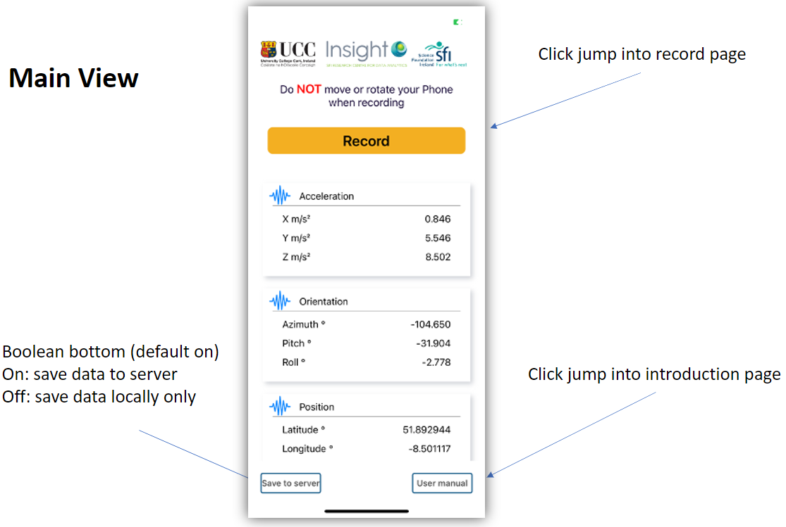

What is RoadPhone App
The RoadPhone app is a smartphone application that collects the data by road users and upload it to the google cloud for processing.
All common smartphones have integrated motion sensors and GPS. The RoadPhone app is designed to allow road users to read those data from their smartphones and store to the cloud. For research purposes, the data collected include 3-axis acceleration data, orientations, gyroscope data, speed and precise locations, where precise locations enable the user to locate the anomalies and map them in the anomaly map accurately.
RoadPhone user interface
The App is comprised of 3 views.
- 
Main view: direct to other views, select data saving directory, and show the real-time accelerations, orientations and precise positions.
Recording view: choose sampling rate of motion sensors, start/stop recording, and show real-time acceleration graph.
Introduction page: introduces the project and the team.
RoadPhone user instruction
- Start the app, and enable the presice location
- Choose where to store data by click "Save to local/server" button. Then click "Record" to jump into recording page
- Before recording, place the smartphone facing forward on a flat and hard surface in the vehicle
- Press "Start Recording" to start record. During recording, please do NOT move smarphone
- Press "Stop Recording" to stop record
- If "Save to cloud" is chosen in the main page, the data will automatively upload to our cloud; if "Save to local" is seleted, the choose the dictory to store the data